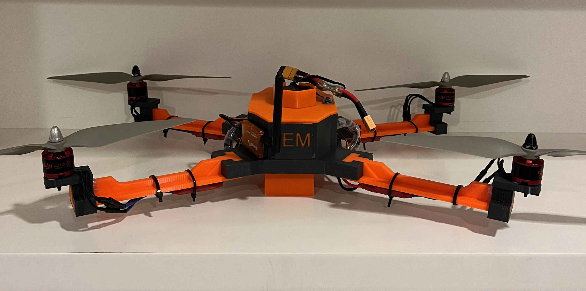
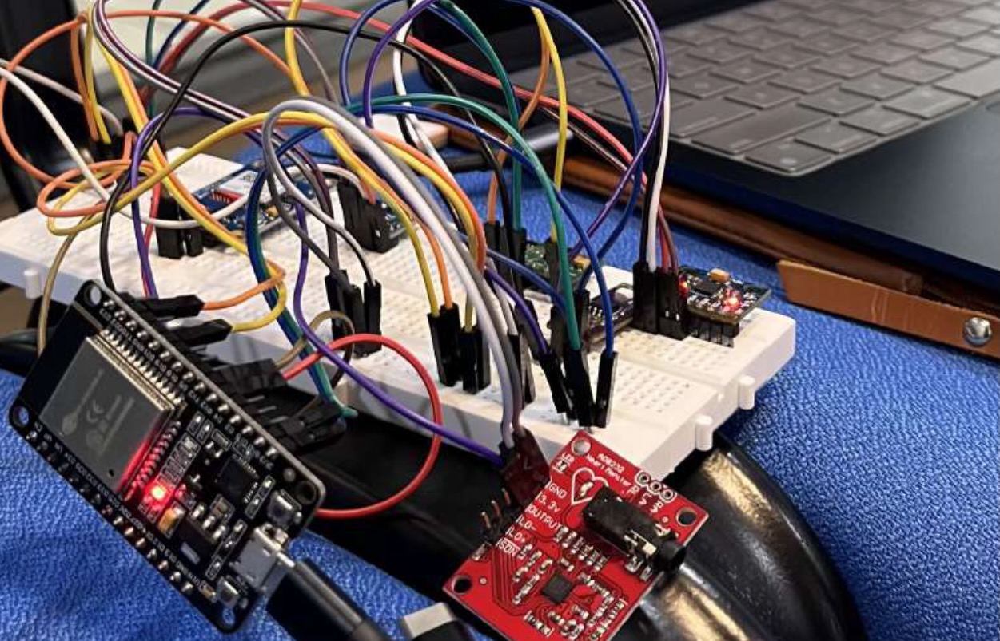

Works.
2025

Jul 2025 – Dec 2025
Intelligent Farm Surveillance System
Achievements & Recognition
-
IEEE YESIST12 25 Finalist (Malaysia)
-
IEEE ROBOTICS COMPETITION RunnersUp 2025 (Kolkata)
EXPLORE
2025

Apr 2025 – May 2025
Smart HealthCare Monitoring System
Achievement
-
IEEE YP Dataport Hackathon 2025 Winner (Singapore)
EXPLORE
against all odds.